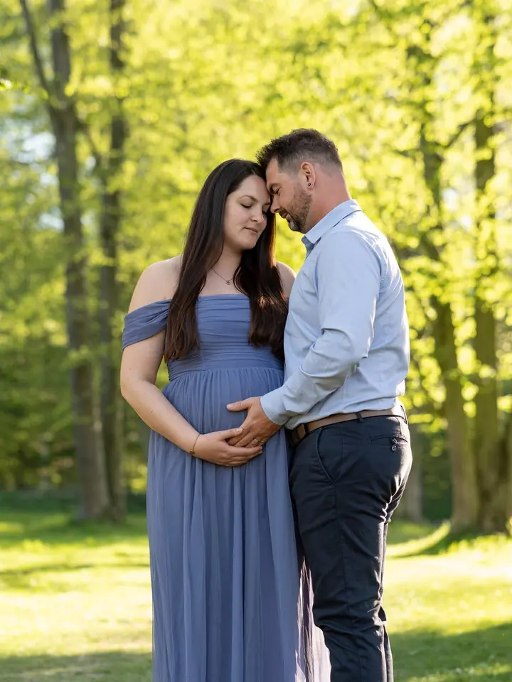
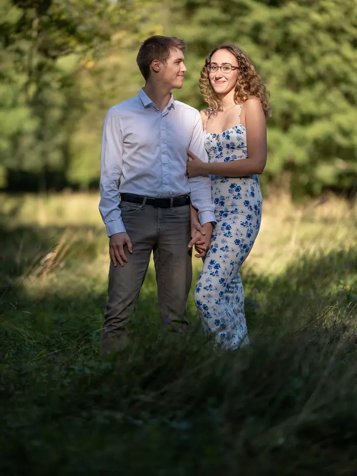
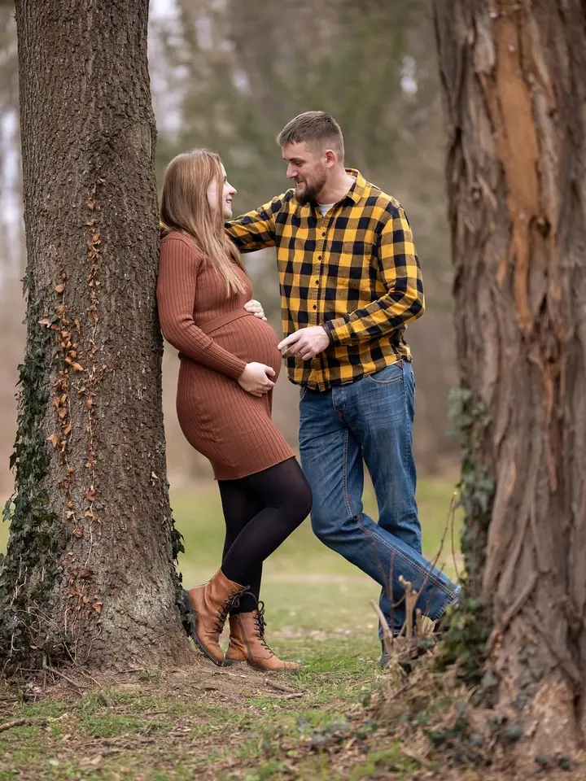
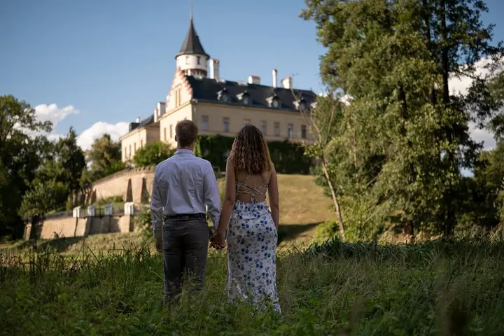

jedna
Partnerské a rodinné focení
Klidné focení pro dva nebo pro celou rodinu, klidně i s jednotlivými portréty. Fotím venku v přírodě a nechávám vám čas, abyste se cítili přirozeně.


Jmenuji se Radim Gibes a v Opavě fotím páry, rodiny i svatby. Věřím, že dobrá fotografie není jen o technice, ale hlavně o důvěře, citu a chvíli, kdy se zastaví čas.
Více o mně
Co fotím
jedna
Klidné focení pro dva nebo pro celou rodinu, klidně i s jednotlivými portréty. Fotím venku v přírodě a nechávám vám čas, abyste se cítili přirozeně.
Celý svatební den od ranních příprav přes obřad, prstýnky a párové fotky až po novomanželský tanec a volnou zábavu. Pro menší svatbu je tu půldenní balíček.
Osobní portrét v exteriéru, který trvá 1 až 3 hodiny. Dostanete 10 upravených fotografií v elektronické podobě.
Vyfotím vaši událost, konferenci, festival nebo koncert tak, aby fotky měly plnou výpovědní hodnotu. Posílám je co nejdřív, ať jsou pořád aktuální.
Fotím pro tu chvíli, kdy se zastaví čas.

Za objektivem
Jmenuji se Radim Gibes a fotím z Opavy. Zaměřuji se hlavně na osobní focení, tedy portréty, rodiny, páry a svatby. Pomáhám lidem uchovat to, co je pro ně nejcennější: emoce, vztahy a okamžiky, které stojí za to.
Ke každému přistupuji individuálně, s respektem a trpělivostí. Ať jde o klidné rodinné focení, intimní portrét nebo velký svatební den, chci, abyste se před foťákem cítili přirozeně a fotky vás těšily i po letech.
Kromě lidí fotím také architekturu, prostory a události a nabízím služby pro firmy, značky a architekty. Rád předávám, co umím, takže vedu i individuální fotokurzy pro začátečníky a pro ty, kdo chtějí fotit portréty.
Radim
Pošlete mi pár řádků přes formulář nebo na foto@radimgibes.cz. Napište, co byste si přáli nafotit a kdy.
Společně vybereme termín, místo a balíček, který vám sedí. U svatby si projdeme, které části dne chcete mít na fotkách.
Fotíme v klidu a bez spěchu, portréty a páry nejčastěji venku v přírodě. Já se postarám o světlo a vy se můžete věnovat sobě.
Z náhledů si vyberete fotky a já je pečlivě upravím. Portréty posílám do 10 pracovních dnů, svatby do 20 dnů.
Portfolio
Otázky
Portrétní focení začíná na 3 500 Kč a obsahuje 10 upravených fotografií v elektronické podobě. Každá další fotka stojí 200 Kč.
Celodenní focení od 23 000 Kč s minimálně 140 upravenými fotkami, nebo půldenní od 15 000 Kč s minimálně 70 fotkami, které pokryje přípravy, obřad, párové a skupinové fotky.
Portréty posílám do 10 pracovních dnů, svatební fotky do 20 dnů. Fotky z reportáže se snažím dodat v nejkratším možném termínu.
Ano, tisk fotografií je možný po vzájemné domluvě. Stačí mi napsat, co byste si představovali.
Napište pár vět o tom, co si představujete. foto@radimgibes.cz